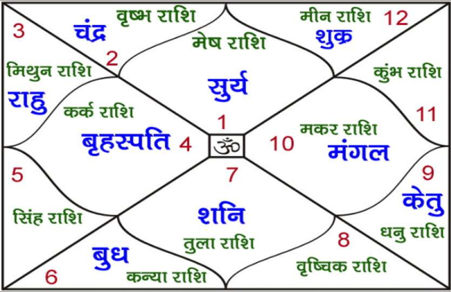
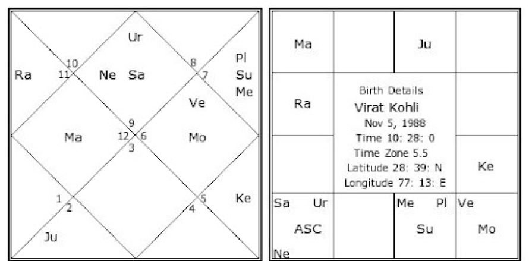

Astrologer's 2016 prediction goes viral after Virat Kohli and Anushka Sharma welcome second baby Akaay
An 8-year-old prediction about Virat Kohli's second child has gone viral at a time when the former Indian captain has embraced parenthood for the second time
My predictions
After a lot of speculation and rumours, Indian cricketer Virat Kohli and his wife, actress Anushka Sharma, finally announced the arrival of their second child, a baby boy, on 15 February. Around three years after having their first child, Vamika, in 2021, Virat and Anushka embraced parenthood for the second time; however, they kept it secret this time. Kohli, while taking to his social media handles, announced the birth of their son, further informing fans that they have named their child Akaay.
Welcome to my page! I am here to showcase Astrology as an indicative science. My role as an astrologer is to help you fulfill your destiny. It is prudent that every student and patron of Astrology understands that there is invariably a convergence of
On April 1, 2016 I made a prediction regarding Virat Kohli's ascendancy in the year 2017 and beyond. Talks of his marriage surfaced in early Jan 2017 as opposed to my prediction of it surfacing in Mar/Apr 2017. I still stand strongly by my prediction of his marriage in the Dec 2017-Apr 2018 timeframe. Analysis of Donald Trump’s chart – Part 2 Prediction was made on December 8, 2016
Copyright 2024 Stars and Astrology Inc. | All Rights Reserved | Privacy Policy
Design & Developed By: